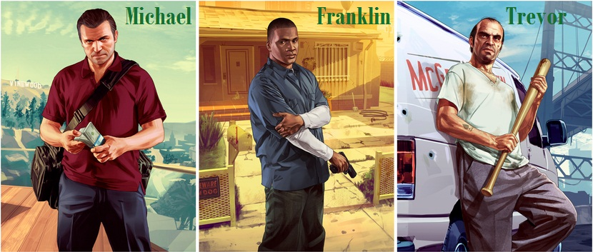

3 KARAKTER UTAMA DALAM GTA V
Grand Theft Auto V memiliki tiga tokoh protagonis yang bisa dimainkan sekaligus dalam jalannya permainan : Michael,
Franklin, dan Trevor.
Michael : adalah seorang pensiunan perampok bank profesional, telah membuat kesepakatan dengan FIB, namun ia kembali ke
kehidupan kejahatan.
Franklin : seorang pemuda muram, agen yang memiliki pengalaman di belakang kemudi, tetapi tidak berpengalaman nyata
dengan dunia kejahatan sampai ia bertemu dengan Michael.
Trevor : adalah sahabat lama dari Michael, ia merupakan psikopat yang pemarah
